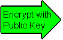
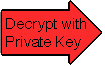
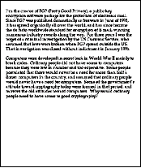
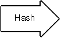
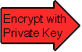
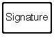
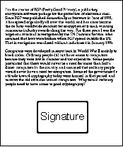
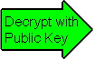

What is a Digital Signature?
Bob |
(Bob's public key) |
Bob has been given two keys. One of Bob's keys is called a Public Key, the other is called a Private Key.
| Bob's Co-workers: | ||||
 |
Anyone can get Bob's Public Key, but Bob keeps his Private Key to himself
|
|||
| Pat | Doug | Susan | ||
Bob's Public key is available to anyone who needs it, but he keeps his Private Key to himself. Keys are used to encrypt information. Encrypting information means "scrambling it up", so that only a person with the appropriate key can make it readable again. Either one of Bob's two keys can encrypt data, and the other key can decrypt that data.
Susan (shown below) can encrypt a message using Bob's Public Key. Bob uses his Private Key to decrypt the message. Any of Bob's coworkers might have access to the message Susan encrypted, but without Bob's Private Key, the data is worthless.
|
"Hey Bob, how about lunch at Taco Bell. I hear they have free refills!" |  | HNFmsEm6Un BejhhyCGKOK JUxhiygSBCEiC 0QYIh/Hn3xgiK BcyLK1UcYiY lxx2lCFHDC/A |
| HNFmsEm6Un BejhhyCGKOK JUxhiygSBCEiC 0QYIh/Hn3xgiK BcyLK1UcYiY lxx2lCFHDC/A |  | "Hey Bob, how about lunch at Taco Bell. I hear they have free refills!" |
With his private key and the right software, Bob can put digital signatures on documents and other data. A digital signature is a "stamp" Bob places on the data which is unique to Bob, and is very difficult to forge. In addition, the signature assures that any changes made to the data that has been signed can not go undetected.
|  |  |
| To sign a document, Bob's software will crunch down the data into just a few lines by a process called "hashing". These few lines are called a message digest. (It is not possible to change a message digest back into the original data from which it was created.) |
|  |  |
Bob's software then encrypts the message digest with his private key. The result is the digital signature.
|  |
Finally, Bob's software appends the digital signature to document. All of the data that was hashed has been signed.
|  |
Bob now passes the document on to Pat.
| First, Pat's software decrypts the signature (using Bob's public key) changing it back into a message digest. If this worked, then it proves that Bob signed the document, because only Bob has his private key. Pat's software then hashes the document data into a message digest. If the message digest is the same as the message digest created when the signature was decrypted, then Pat knows that the signed data has not been changed. |